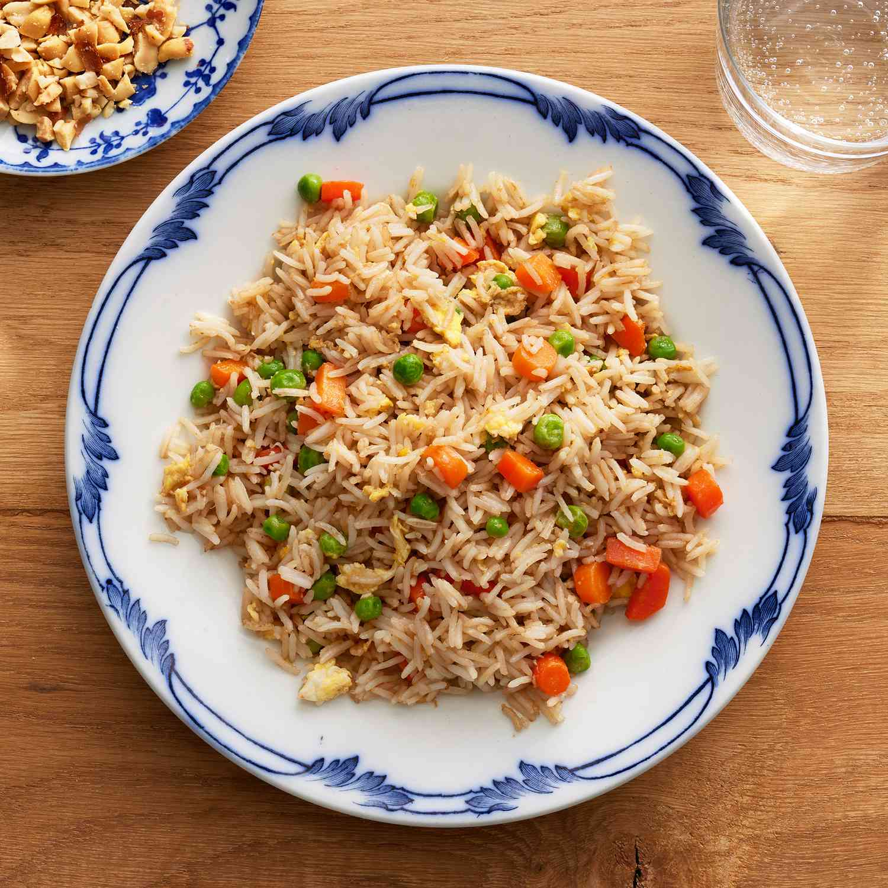

Fried Rice

Description
This is a popular chinese dish. Easy to cook, healthy and very delicious!
Ingredients
- 2/3 cup chopped baby carrots
- 1/2 cup frozen green peas
- 2 tablespoons vegetable oil
- 2 eggs
- 3 cups leftover cooked white rice
- 1 tablespoon soy sauce
- 2 tablespoons sesame oil
Steps
- Place carrots in saucepan and cover with water. Bring to a low obil and cook for 3 to 5 minutes. Stir in peas, then immediately drain
- Heat a wok over high heat. Pour in vegetable oil, then stir in carrots, peas, and garlic; cook for about 30 seconds. Add eggs; stir quickly to scramble eggs with vegetables.
- Stir in cooked rice. Add soy sauce and toss rice to coat. Drizzle with sesame oil and toss again.